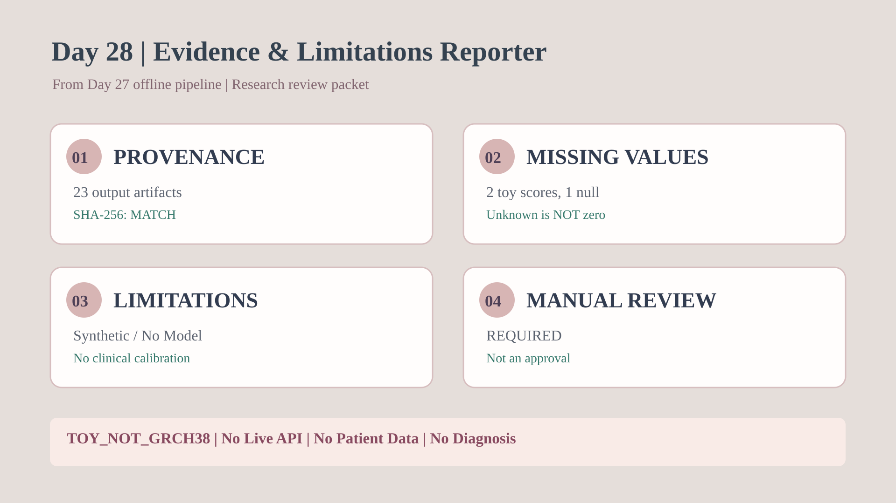

Day 28｜限制與證據追蹤
學會說清楚我們不知道什麼 — OFFLINE 教學報告
SYNTHETIC EDUCATIONAL DEMO · TOY_NOT_GRCH38
這些不是 AlphaGenome 真實輸出、病人資料或診斷。SHA-256 僅核對本地檔案完整性，並非權威來源認證。
這些不是 AlphaGenome 真實輸出、病人資料或診斷。SHA-256 僅核對本地檔案完整性，並非權威來源認證。
23
已核對檔案8
候選1
缺人工分數REQUIRED
人工審閱從 Day 27 到證據報告

Day 27 來源完整性：MATCH；但未驗證原生模型或資料來源真實性。
QC 後的人工候選
| Variant | 人工分數 | 分數狀態 | 審閱 |
|---|---|---|---|
chr1:100:A>C | 0.42 | SYNTHETIC_SCORE | REVIEW_REQUIRED |
chr1:110:A>G | -0.17 | SYNTHETIC_SCORE | REVIEW_REQUIRED |
chr1:110:A>C | null | MISSING_SCORE | REVIEW_REQUIRED |
模型／證據限制
- SYNTHETIC_ONLY — 所有位置、REF/ALT 軌跡、分數與 Motif 均是人工教學資料；不是 AlphaGenome API 或實驗結果。
- ASSEMBLY_UNVERIFIED — TOY_NOT_GRCH38；未獨立以 GRCh38 FASTA 核對 REF，也未進行臨床變異正規化。
- MODEL_TISSUE_NOT_RUN — 未執行真實模型或組織情境預測；不能把差分數值當成剪接或基因調控機制。
- POPULATION_TRANS_NOT_VALIDATED — 沒有族群泛化、跨區域 trans 調控、臨床疾病風險或效能校準的驗證。
- PROVENANCE_NOT_SIGNED — SHA-256 只能檢查相對於本地 manifest 的內容一致性，不是數位簽章或來源真實性的證明。
- MANUAL_REVIEW_REQUIRED — SELECTED 只代表通過人工教學 QC；不能直接生成 ACMG/AMP 分類、診斷或治療建議。